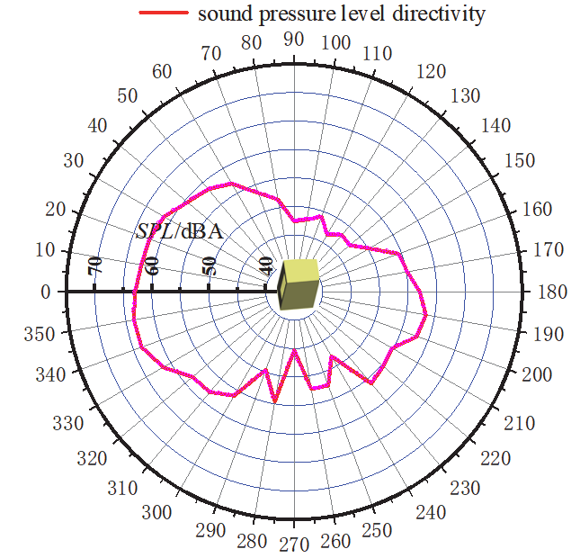

默认采用 AI 综合评判与异常优先复核，不要求用户逐点点击。人工确认的是综合证据、风险分组和异常处置策略，而不是假装逐一测量了所有像素。
风险等级：medium 建议动作：修复后重新提取（re_extract） 异常候选：0
下一步指令：暂不接受：锚点留一稳定性已达标（98.3 分），主要问题是像素/局部测量不确定度；Agent 先检查 8 个最高风险代表区间并寻找更高分辨率或矢量图源，不要求用户调整锚点。
| 细化指标 | 得分 | 权重 | 判定 |
|---|---|---|---|
| 异常负担 | 100.0 | 10% | 达标 |
| 坐标标定质量 | 100.0 | 15% | 达标 |
| 像素证据质量 | 100.0 | 20% | 达标 |
| 来源与证据完整性 | 100.0 | 10% | 达标 |
| 项目质量门符合度 | 100.0 | 10% | 达标 |
| 系列分离与连续性 | 100.0 | 20% | 达标 |
| 不确定度与稳定性代理 | 74.3 | 15% | 不足 |
已完成
接下来
现在无需逐点参与
触发条件：仅当 Agent 完成自动诊断与安全重提取后仍不达标。
已将 93 个候选合并为 8 个连续区间，页面只展示其中 8 个最高风险代表区间，不要求用户逐点核对；完整清单保存在 review-uncertainty.csv。
| 区间 | 系列 | 候选数 | x 范围 | 峰值 |
|---|---|---|---|---|
| sound-pressure-level-directivity-uncertainty-007 | sound-pressure-level-directivity | 40 | 260.0 ～ 300.0 | 11.64% |
| sound-pressure-level-directivity-uncertainty-006 | sound-pressure-level-directivity | 21 | 230.0 ～ 250.0 | 8.60% |
| sound-pressure-level-directivity-uncertainty-004 | sound-pressure-level-directivity | 11 | 147.0 ～ 160.0 | 4.80% |
| sound-pressure-level-directivity-uncertainty-002 | sound-pressure-level-directivity | 10 | 80.0 ～ 89.0 | 4.53% |
| sound-pressure-level-directivity-uncertainty-001 | sound-pressure-level-directivity | 4 | 60.0 ～ 63.0 | 3.78% |
| sound-pressure-level-directivity-uncertainty-003 | sound-pressure-level-directivity | 4 | 111.0 ～ 116.0 | 3.41% |
| sound-pressure-level-directivity-uncertainty-005 | sound-pressure-level-directivity | 1 | 202.0 ～ 202.0 | 3.25% |
| sound-pressure-level-directivity-uncertainty-008 | sound-pressure-level-directivity | 2 | 324.0 ～ 329.0 | 3.23% |
普通候选可批量确认；异常候选必须在独立区域查看局部证据并逐项决定，两者不会混在同一个批次中。只有没有异常项时，batch_confirm 才能直接完成。
这里只显示异常候选。每项提供原始分辨率局部证据、异常原因和独立决定；普通候选不会混入本表。
| 局部证据 | 候选编号 | 系列 | X | Y/值 | 证据状态 | 决策 | 目标系列 | 校正 X | 校正 Y | 理由 | 异常说明 |
|---|
综合评估未发现异常候选。
普通候选默认批量接受。如需抽查，可在此单独修改；这里不包含任何已标记异常候选。
| 候选编号 | 系列 | X | Y/值 | 证据状态 | 决策 | 目标系列 | 校正 X | 校正 Y | 理由 |
|---|---|---|---|---|---|---|---|---|---|
polar_line-sound-pressure-level-directivity-000001 | sound-pressure-level-directivity | 0.0 | 63.00480282791879 | visible_pixel_support | 接受 | ||||
polar_line-sound-pressure-level-directivity-000002 | sound-pressure-level-directivity | 1.0 | 62.853697859577714 | visible_pixel_support | 接受 | ||||
polar_line-sound-pressure-level-directivity-000003 | sound-pressure-level-directivity | 2.0 | 62.7175379125991 | visible_pixel_support | 接受 | ||||
polar_line-sound-pressure-level-directivity-000004 | sound-pressure-level-directivity | 3.0 | 62.7175379125991 | visible_pixel_support | 接受 | ||||
polar_line-sound-pressure-level-directivity-000005 | sound-pressure-level-directivity | 4.0 | 62.60740162767112 | visible_pixel_support | 接受 | ||||
polar_line-sound-pressure-level-directivity-000006 | sound-pressure-level-directivity | 5.0 | 62.504541794991816 | visible_pixel_support | 接受 | ||||
polar_line-sound-pressure-level-directivity-000007 | sound-pressure-level-directivity | 6.0 | 62.504541794991816 | visible_pixel_support | 接受 | ||||
polar_line-sound-pressure-level-directivity-000008 | sound-pressure-level-directivity | 7.0 | 62.41678399872747 | visible_pixel_support | 接受 | ||||
polar_line-sound-pressure-level-directivity-000009 | sound-pressure-level-directivity | 8.0 | 62.367552908295565 | visible_pixel_support | 接受 | ||||
polar_line-sound-pressure-level-directivity-000010 | sound-pressure-level-directivity | 9.0 | 62.367552908295565 | visible_pixel_support | 接受 | ||||
polar_line-sound-pressure-level-directivity-000011 | sound-pressure-level-directivity | 10.0 | 62.31411884294383 | visible_pixel_support | 接受 | ||||
polar_line-sound-pressure-level-directivity-000012 | sound-pressure-level-directivity | 11.0 | 62.24545994735517 | visible_pixel_support | 接受 | ||||
polar_line-sound-pressure-level-directivity-000013 | sound-pressure-level-directivity | 12.0 | 62.185814957665514 | visible_pixel_support | 接受 | ||||
polar_line-sound-pressure-level-directivity-000014 | sound-pressure-level-directivity | 13.0 | 62.13524346273421 | visible_pixel_support | 接受 | ||||
polar_line-sound-pressure-level-directivity-000015 | sound-pressure-level-directivity | 14.0 | 62.13294251320734 | visible_pixel_support | 接受 | ||||
polar_line-sound-pressure-level-directivity-000016 | sound-pressure-level-directivity | 15.0 | 62.13294251320734 | visible_pixel_support | 接受 | ||||
polar_line-sound-pressure-level-directivity-000017 | sound-pressure-level-directivity | 16.0 | 62.10347306350893 | visible_pixel_support | 接受 | ||||
polar_line-sound-pressure-level-directivity-000018 | sound-pressure-level-directivity | 17.0 | 62.083194169252664 | visible_pixel_support | 接受 | ||||
polar_line-sound-pressure-level-directivity-000019 | sound-pressure-level-directivity | 18.0 | 62.072126535556045 | visible_pixel_support | 接受 | ||||
polar_line-sound-pressure-level-directivity-000020 | sound-pressure-level-directivity | 19.0 | 62.07028148890295 | visible_pixel_support | 接受 | ||||
polar_line-sound-pressure-level-directivity-000021 | sound-pressure-level-directivity | 20.0 | 62.0245763428955 | visible_pixel_support | 接受 | ||||
polar_line-sound-pressure-level-directivity-000022 | sound-pressure-level-directivity | 21.0 | 61.743098690882896 | visible_pixel_support | 接受 | ||||
polar_line-sound-pressure-level-directivity-000023 | sound-pressure-level-directivity | 22.0 | 61.74169784845652 | visible_pixel_support | 接受 | ||||
polar_line-sound-pressure-level-directivity-000024 | sound-pressure-level-directivity | 23.0 | 61.74169784845652 | visible_pixel_support | 接受 | ||||
polar_line-sound-pressure-level-directivity-000025 | sound-pressure-level-directivity | 24.0 | 61.78275870123551 | visible_pixel_support | 接受 | ||||
polar_line-sound-pressure-level-directivity-000026 | sound-pressure-level-directivity | 25.0 | 61.689814858824164 | visible_pixel_support | 接受 | ||||
polar_line-sound-pressure-level-directivity-000027 | sound-pressure-level-directivity | 26.0 | 61.74916815816953 | visible_pixel_support | 接受 | ||||
polar_line-sound-pressure-level-directivity-000028 | sound-pressure-level-directivity | 27.0 | 61.53967314068478 | visible_pixel_support | 接受 | ||||
polar_line-sound-pressure-level-directivity-000029 | sound-pressure-level-directivity | 28.0 | 61.472774277516244 | visible_pixel_support | 接受 | ||||
polar_line-sound-pressure-level-directivity-000030 | sound-pressure-level-directivity | 29.0 | 61.4203618313082 | visible_pixel_support | 接受 | ||||
polar_line-sound-pressure-level-directivity-000031 | sound-pressure-level-directivity | 30.0 | 61.35979254177498 | visible_pixel_support | 接受 | ||||
polar_line-sound-pressure-level-directivity-000032 | sound-pressure-level-directivity | 31.0 | 61.0533906370006 | visible_pixel_support | 接受 | ||||
polar_line-sound-pressure-level-directivity-000033 | sound-pressure-level-directivity | 32.0 | 60.8662579624293 | visible_pixel_support | 接受 | ||||
polar_line-sound-pressure-level-directivity-000034 | sound-pressure-level-directivity | 33.0 | 60.67629880935597 | visible_pixel_support | 接受 | ||||
polar_line-sound-pressure-level-directivity-000035 | sound-pressure-level-directivity | 34.0 | 60.41425466075968 | visible_pixel_support | 接受 | ||||
polar_line-sound-pressure-level-directivity-000036 | sound-pressure-level-directivity | 35.0 | 60.24315596978277 | visible_pixel_support | 接受 | ||||
polar_line-sound-pressure-level-directivity-000037 | sound-pressure-level-directivity | 36.0 | 60.0399811670145 | visible_pixel_support | 接受 | ||||
polar_line-sound-pressure-level-directivity-000038 | sound-pressure-level-directivity | 37.0 | 59.87935595516237 | visible_pixel_support | 接受 | ||||
polar_line-sound-pressure-level-directivity-000039 | sound-pressure-level-directivity | 38.0 | 59.72273658526733 | visible_pixel_support | 接受 | ||||
polar_line-sound-pressure-level-directivity-000040 | sound-pressure-level-directivity | 39.0 | 59.5447694821584 | visible_pixel_support | 接受 | ||||
polar_line-sound-pressure-level-directivity-000041 | sound-pressure-level-directivity | 40.0 | 59.39930872402167 | visible_pixel_support | 接受 | ||||
polar_line-sound-pressure-level-directivity-000042 | sound-pressure-level-directivity | 41.0 | 59.32958849397623 | visible_pixel_support | 接受 | ||||
polar_line-sound-pressure-level-directivity-000043 | sound-pressure-level-directivity | 42.0 | 59.20038473772121 | visible_pixel_support | 接受 | ||||
polar_line-sound-pressure-level-directivity-000044 | sound-pressure-level-directivity | 43.0 | 59.07567420759486 | visible_pixel_support | 接受 | ||||
polar_line-sound-pressure-level-directivity-000045 | sound-pressure-level-directivity | 44.0 | 58.95552727764493 | visible_pixel_support | 接受 | ||||
polar_line-sound-pressure-level-directivity-000046 | sound-pressure-level-directivity | 45.0 | 58.840013143175995 | visible_pixel_support | 接受 | ||||
polar_line-sound-pressure-level-directivity-000047 | sound-pressure-level-directivity | 46.0 | 58.73235791883356 | visible_pixel_support | 接受 | ||||
polar_line-sound-pressure-level-directivity-000048 | sound-pressure-level-directivity | 47.0 | 58.63795440867897 | visible_pixel_support | 接受 | ||||
polar_line-sound-pressure-level-directivity-000049 | sound-pressure-level-directivity | 48.0 | 58.54317126509869 | visible_pixel_support | 接受 | ||||
polar_line-sound-pressure-level-directivity-000050 | sound-pressure-level-directivity | 49.0 | 58.47036840029192 | visible_pixel_support | 接受 | ||||
polar_line-sound-pressure-level-directivity-000051 | sound-pressure-level-directivity | 50.0 | 58.38879437164792 | visible_pixel_support | 接受 | ||||
polar_line-sound-pressure-level-directivity-000052 | sound-pressure-level-directivity | 51.0 | 58.18925699343578 | visible_pixel_support | 接受 | ||||
polar_line-sound-pressure-level-directivity-000053 | sound-pressure-level-directivity | 52.0 | 58.019480189642834 | visible_pixel_support | 接受 | ||||
polar_line-sound-pressure-level-directivity-000054 | sound-pressure-level-directivity | 53.0 | 57.85937079176004 | visible_pixel_support | 接受 | ||||
polar_line-sound-pressure-level-directivity-000055 | sound-pressure-level-directivity | 54.0 | 57.67279621790222 | visible_pixel_support | 接受 | ||||
polar_line-sound-pressure-level-directivity-000056 | sound-pressure-level-directivity | 55.0 | 57.52796675172212 | visible_pixel_support | 接受 | ||||
polar_line-sound-pressure-level-directivity-000057 | sound-pressure-level-directivity | 56.0 | 57.34979879737773 | visible_pixel_support | 接受 | ||||
polar_line-sound-pressure-level-directivity-000058 | sound-pressure-level-directivity | 57.0 | 57.22085550160183 | visible_pixel_support | 接受 | ||||
polar_line-sound-pressure-level-directivity-000059 | sound-pressure-level-directivity | 58.0 | 57.10246568169581 | visible_pixel_support | 接受 | ||||
polar_line-sound-pressure-level-directivity-000060 | sound-pressure-level-directivity | 59.0 | 56.9390604172562 | visible_pixel_support | 接受 | ||||
polar_line-sound-pressure-level-directivity-000061 | sound-pressure-level-directivity | 60.0 | 56.7002758598588 | visible_pixel_support | 接受 | ||||
polar_line-sound-pressure-level-directivity-000062 | sound-pressure-level-directivity | 61.0 | 56.3309232428215 | visible_pixel_support | 接受 | ||||
polar_line-sound-pressure-level-directivity-000063 | sound-pressure-level-directivity | 62.0 | 55.96696342675886 | visible_pixel_support | 接受 | ||||
polar_line-sound-pressure-level-directivity-000064 | sound-pressure-level-directivity | 63.0 | 55.540655396294625 | visible_pixel_support | 接受 | ||||
polar_line-sound-pressure-level-directivity-000065 | sound-pressure-level-directivity | 64.0 | 55.18468921891863 | visible_pixel_support | 接受 | ||||
polar_line-sound-pressure-level-directivity-000066 | sound-pressure-level-directivity | 65.0 | 54.767377803150865 | visible_pixel_support | 接受 | ||||
polar_line-sound-pressure-level-directivity-000067 | sound-pressure-level-directivity | 66.0 | 54.49167066648688 | visible_pixel_support | 接受 | ||||
polar_line-sound-pressure-level-directivity-000068 | sound-pressure-level-directivity | 67.0 | 54.15530502368594 | visible_pixel_support | 接受 | ||||
polar_line-sound-pressure-level-directivity-000069 | sound-pressure-level-directivity | 68.0 | 53.91363424648341 | visible_pixel_support | 接受 | ||||
polar_line-sound-pressure-level-directivity-000070 | sound-pressure-level-directivity | 69.0 | 53.65207570207488 | visible_pixel_support | 接受 | ||||
polar_line-sound-pressure-level-directivity-000071 | sound-pressure-level-directivity | 70.0 | 53.393581028470194 | visible_pixel_support | 接受 | ||||
polar_line-sound-pressure-level-directivity-000072 | sound-pressure-level-directivity | 71.0 | 53.086511284643166 | visible_pixel_support | 接受 | ||||
polar_line-sound-pressure-level-directivity-000073 | sound-pressure-level-directivity | 72.0 | 52.83661461066032 | visible_pixel_support | 接受 | ||||
polar_line-sound-pressure-level-directivity-000074 | sound-pressure-level-directivity | 73.0 | 52.69515333405462 | visible_pixel_support | 接受 | ||||
polar_line-sound-pressure-level-directivity-000075 | sound-pressure-level-directivity | 74.0 | 52.455394710312746 | visible_pixel_support | 接受 | ||||
polar_line-sound-pressure-level-directivity-000076 | sound-pressure-level-directivity | 75.0 | 52.21954703765074 | visible_pixel_support | 接受 | ||||
polar_line-sound-pressure-level-directivity-000077 | sound-pressure-level-directivity | 76.0 | 52.026745113186884 | visible_pixel_support | 接受 | ||||
polar_line-sound-pressure-level-directivity-000078 | sound-pressure-level-directivity | 77.0 | 51.913997676446996 | visible_pixel_support | 接受 | ||||
polar_line-sound-pressure-level-directivity-000079 | sound-pressure-level-directivity | 78.0 | 51.691453886074584 | visible_pixel_support | 接受 | ||||
polar_line-sound-pressure-level-directivity-000080 | sound-pressure-level-directivity | 79.0 | 51.47348418499546 | visible_pixel_support | 接受 | ||||
polar_line-sound-pressure-level-directivity-000081 | sound-pressure-level-directivity | 80.0 | 51.10491314650473 | visible_pixel_support | 接受 | ||||
polar_line-sound-pressure-level-directivity-000082 | sound-pressure-level-directivity | 81.0 | 50.740390768614624 | visible_pixel_support | 接受 | ||||
polar_line-sound-pressure-level-directivity-000083 | sound-pressure-level-directivity | 82.0 | 50.22404295926973 | visible_pixel_support | 接受 | ||||
polar_line-sound-pressure-level-directivity-000084 | sound-pressure-level-directivity | 83.0 | 49.71160378471359 | visible_pixel_support | 接受 | ||||
polar_line-sound-pressure-level-directivity-000085 | sound-pressure-level-directivity | 84.0 | 49.34378684833085 | visible_pixel_support | 接受 | ||||
polar_line-sound-pressure-level-directivity-000086 | sound-pressure-level-directivity | 85.0 | 48.857372869532114 | visible_pixel_support | 接受 | ||||
polar_line-sound-pressure-level-directivity-000087 | sound-pressure-level-directivity | 86.0 | 48.51715879466036 | visible_pixel_support | 接受 | ||||
polar_line-sound-pressure-level-directivity-000088 | sound-pressure-level-directivity | 87.0 | 48.18331615152894 | visible_pixel_support | 接受 | ||||
polar_line-sound-pressure-level-directivity-000089 | sound-pressure-level-directivity | 88.0 | 47.861212892783904 | visible_pixel_support | 接受 | ||||
polar_line-sound-pressure-level-directivity-000090 | sound-pressure-level-directivity | 89.0 | 47.54077776606636 | visible_pixel_support | 接受 | ||||
polar_line-sound-pressure-level-directivity-000091 | sound-pressure-level-directivity | 90.0 | 47.37895025826658 | visible_pixel_support | 接受 | ||||
polar_line-sound-pressure-level-directivity-000092 | sound-pressure-level-directivity | 91.0 | 47.37996196279274 | visible_pixel_support | 接受 | ||||
polar_line-sound-pressure-level-directivity-000093 | sound-pressure-level-directivity | 92.0 | 47.38299657768755 | visible_pixel_support | 接受 | ||||
polar_line-sound-pressure-level-directivity-000094 | sound-pressure-level-directivity | 93.0 | 47.395127566830155 | visible_pixel_support | 接受 | ||||
polar_line-sound-pressure-level-directivity-000095 | sound-pressure-level-directivity | 94.0 | 47.56173116944494 | visible_pixel_support | 接受 | ||||
polar_line-sound-pressure-level-directivity-000096 | sound-pressure-level-directivity | 95.0 | 47.57269274934713 | visible_pixel_support | 接受 | ||||
polar_line-sound-pressure-level-directivity-000097 | sound-pressure-level-directivity | 96.0 | 47.600551689981806 | visible_pixel_support | 接受 | ||||
polar_line-sound-pressure-level-directivity-000098 | sound-pressure-level-directivity | 97.0 | 47.61743587364453 | visible_pixel_support | 接受 | ||||
polar_line-sound-pressure-level-directivity-000099 | sound-pressure-level-directivity | 98.0 | 47.657074039695885 | visible_pixel_support | 接受 | ||||
polar_line-sound-pressure-level-directivity-000100 | sound-pressure-level-directivity | 99.0 | 47.83587403057683 | visible_pixel_support | 接受 | ||||
polar_line-sound-pressure-level-directivity-000101 | sound-pressure-level-directivity | 100.0 | 47.8865016666195 | visible_pixel_support | 接受 | ||||
polar_line-sound-pressure-level-directivity-000102 | sound-pressure-level-directivity | 101.0 | 47.91464964732165 | visible_pixel_support | 接受 | ||||
polar_line-sound-pressure-level-directivity-000103 | sound-pressure-level-directivity | 102.0 | 47.97655213326635 | visible_pixel_support | 接受 | ||||
polar_line-sound-pressure-level-directivity-000104 | sound-pressure-level-directivity | 103.0 | 48.04583949868943 | visible_pixel_support | 接受 | ||||
polar_line-sound-pressure-level-directivity-000105 | sound-pressure-level-directivity | 104.0 | 48.12239415618006 | visible_pixel_support | 接受 | ||||
polar_line-sound-pressure-level-directivity-000106 | sound-pressure-level-directivity | 105.0 | 48.31560631035896 | visible_pixel_support | 接受 | ||||
polar_line-sound-pressure-level-directivity-000107 | sound-pressure-level-directivity | 106.0 | 48.40182521666955 | visible_pixel_support | 接受 | ||||
polar_line-sound-pressure-level-directivity-000108 | sound-pressure-level-directivity | 107.0 | 48.598412031708605 | visible_pixel_support | 接受 | ||||
polar_line-sound-pressure-level-directivity-000109 | sound-pressure-level-directivity | 108.0 | 48.693813917070734 | visible_pixel_support | 接受 | ||||
polar_line-sound-pressure-level-directivity-000110 | sound-pressure-level-directivity | 109.0 | 48.89345653482594 | visible_pixel_support | 接受 | ||||
polar_line-sound-pressure-level-directivity-000111 | sound-pressure-level-directivity | 110.0 | 48.84924102450722 | visible_pixel_support | 接受 | ||||
polar_line-sound-pressure-level-directivity-000112 | sound-pressure-level-directivity | 111.0 | 48.609454243785294 | visible_pixel_support | 接受 | ||||
polar_line-sound-pressure-level-directivity-000113 | sound-pressure-level-directivity | 112.0 | 48.374707811241194 | visible_pixel_support | 接受 | ||||
polar_line-sound-pressure-level-directivity-000114 | sound-pressure-level-directivity | 113.0 | 48.14527316377944 | visible_pixel_support | 接受 | ||||
polar_line-sound-pressure-level-directivity-000115 | sound-pressure-level-directivity | 114.0 | 47.85634393384812 | visible_pixel_support | 接受 | ||||
polar_line-sound-pressure-level-directivity-000116 | sound-pressure-level-directivity | 115.0 | 47.63528851984604 | visible_pixel_support | 接受 | ||||
polar_line-sound-pressure-level-directivity-000117 | sound-pressure-level-directivity | 116.0 | 47.350588698281236 | visible_pixel_support | 接受 | ||||
polar_line-sound-pressure-level-directivity-000118 | sound-pressure-level-directivity | 117.0 | 47.13884855718858 | visible_pixel_support | 接受 | ||||
polar_line-sound-pressure-level-directivity-000119 | sound-pressure-level-directivity | 118.0 | 46.859064690395655 | visible_pixel_support | 接受 | ||||
polar_line-sound-pressure-level-directivity-000120 | sound-pressure-level-directivity | 119.0 | 46.79551208454732 | visible_pixel_support | 接受 | ||||
polar_line-sound-pressure-level-directivity-000121 | sound-pressure-level-directivity | 120.0 | 46.59951359227306 | visible_pixel_support | 接受 | ||||
polar_line-sound-pressure-level-directivity-000122 | sound-pressure-level-directivity | 121.0 | 46.59951359227306 | visible_pixel_support | 接受 | ||||
polar_line-sound-pressure-level-directivity-000123 | sound-pressure-level-directivity | 122.0 | 46.76254125448413 | visible_pixel_support | 接受 | ||||
polar_line-sound-pressure-level-directivity-000124 | sound-pressure-level-directivity | 123.0 | 46.84638160217354 | visible_pixel_support | 接受 | ||||
polar_line-sound-pressure-level-directivity-000125 | sound-pressure-level-directivity | 124.0 | 47.01855211230718 | visible_pixel_support | 接受 | ||||
polar_line-sound-pressure-level-directivity-000126 | sound-pressure-level-directivity | 125.0 | 47.10681806469721 | visible_pixel_support | 接受 | ||||
polar_line-sound-pressure-level-directivity-000127 | sound-pressure-level-directivity | 126.0 | 47.28755384572156 | visible_pixel_support | 接受 | ||||
polar_line-sound-pressure-level-directivity-000128 | sound-pressure-level-directivity | 127.0 | 47.44353261096452 | visible_pixel_support | 接受 | ||||
polar_line-sound-pressure-level-directivity-000129 | sound-pressure-level-directivity | 128.0 | 47.568707832420905 | visible_pixel_support | 接受 | ||||
polar_line-sound-pressure-level-directivity-000130 | sound-pressure-level-directivity | 129.0 | 47.76249778443034 | visible_pixel_support | 接受 | ||||
polar_line-sound-pressure-level-directivity-000131 | sound-pressure-level-directivity | 130.0 | 47.83977558919446 | visible_pixel_support | 接受 | ||||
polar_line-sound-pressure-level-directivity-000132 | sound-pressure-level-directivity | 131.0 | 47.822209176581794 | visible_pixel_support | 接受 | ||||
polar_line-sound-pressure-level-directivity-000133 | sound-pressure-level-directivity | 132.0 | 47.80852966632988 | visible_pixel_support | 接受 | ||||
polar_line-sound-pressure-level-directivity-000134 | sound-pressure-level-directivity | 133.0 | 47.79874958819098 | visible_pixel_support | 接受 | ||||
polar_line-sound-pressure-level-directivity-000135 | sound-pressure-level-directivity | 134.0 | 47.79287793325379 | visible_pixel_support | 接受 | ||||
polar_line-sound-pressure-level-directivity-000136 | sound-pressure-level-directivity | 135.0 | 47.79092011276665 | visible_pixel_support | 接受 | ||||
polar_line-sound-pressure-level-directivity-000137 | sound-pressure-level-directivity | 136.0 | 47.79287793325379 | visible_pixel_support | 接受 | ||||
polar_line-sound-pressure-level-directivity-000138 | sound-pressure-level-directivity | 137.0 | 47.79874958819098 | visible_pixel_support | 接受 | ||||
polar_line-sound-pressure-level-directivity-000139 | sound-pressure-level-directivity | 138.0 | 47.80852966632988 | visible_pixel_support | 接受 | ||||
polar_line-sound-pressure-level-directivity-000140 | sound-pressure-level-directivity | 139.0 | 47.59955779427164 | visible_pixel_support | 接受 | ||||
polar_line-sound-pressure-level-directivity-000141 | sound-pressure-level-directivity | 140.0 | 47.61743587364453 | visible_pixel_support | 接受 | ||||
polar_line-sound-pressure-level-directivity-000142 | sound-pressure-level-directivity | 141.0 | 47.861212892783904 | visible_pixel_support | 接受 | ||||
polar_line-sound-pressure-level-directivity-000143 | sound-pressure-level-directivity | 142.0 | 48.011242179519854 | visible_pixel_support | 接受 | ||||
polar_line-sound-pressure-level-directivity-000144 | sound-pressure-level-directivity | 143.0 | 48.136698229725475 | visible_pixel_support | 接受 | ||||
polar_line-sound-pressure-level-directivity-000145 | sound-pressure-level-directivity | 144.0 | 48.51715879466036 | visible_pixel_support | 接受 | ||||
polar_line-sound-pressure-level-directivity-000146 | sound-pressure-level-directivity | 145.0 | 48.683754945073815 | visible_pixel_support | 接受 | ||||
polar_line-sound-pressure-level-directivity-000147 | sound-pressure-level-directivity | 146.0 | 48.9447136405244 | visible_pixel_support | 接受 | ||||
polar_line-sound-pressure-level-directivity-000148 | sound-pressure-level-directivity | 147.0 | 49.207903423056415 | visible_pixel_support | 接受 | ||||
polar_line-sound-pressure-level-directivity-000149 | sound-pressure-level-directivity | 148.0 | 49.38908472156476 | visible_pixel_support | 接受 | ||||
polar_line-sound-pressure-level-directivity-000150 | sound-pressure-level-directivity | 149.0 | 49.79303303172185 | visible_pixel_support | 接受 | ||||
polar_line-sound-pressure-level-directivity-000151 | sound-pressure-level-directivity | 150.0 | 50.06459279030467 | visible_pixel_support | 接受 | ||||
polar_line-sound-pressure-level-directivity-000152 | sound-pressure-level-directivity | 151.0 | 50.398091422276096 | visible_pixel_support | 接受 | ||||
polar_line-sound-pressure-level-directivity-000153 | sound-pressure-level-directivity | 152.0 | 50.740390768614624 | visible_pixel_support | 接受 | ||||
polar_line-sound-pressure-level-directivity-000154 | sound-pressure-level-directivity | 153.0 | 51.09092680685605 | visible_pixel_support | 接受 | ||||
polar_line-sound-pressure-level-directivity-000155 | sound-pressure-level-directivity | 154.0 | 51.44384741174338 | visible_pixel_support | 接受 | ||||
polar_line-sound-pressure-level-directivity-000156 | sound-pressure-level-directivity | 155.0 | 51.87921102328249 | visible_pixel_support | 接受 | ||||
polar_line-sound-pressure-level-directivity-000157 | sound-pressure-level-directivity | 156.0 | 52.24857070387171 | visible_pixel_support | 接受 | ||||
polar_line-sound-pressure-level-directivity-000158 | sound-pressure-level-directivity | 157.0 | 52.80855301567246 | visible_pixel_support | 接受 | ||||
polar_line-sound-pressure-level-directivity-000159 | sound-pressure-level-directivity | 158.0 | 53.21051212671397 | visible_pixel_support | 接受 | ||||
polar_line-sound-pressure-level-directivity-000160 | sound-pressure-level-directivity | 159.0 | 53.70895793717383 | visible_pixel_support | 接受 | ||||
polar_line-sound-pressure-level-directivity-000161 | sound-pressure-level-directivity | 160.0 | 54.24319780444108 | visible_pixel_support | 接受 | ||||
polar_line-sound-pressure-level-directivity-000162 | sound-pressure-level-directivity | 161.0 | 54.434514781379406 | visible_pixel_support | 接受 | ||||
polar_line-sound-pressure-level-directivity-000163 | sound-pressure-level-directivity | 162.0 | 54.533307685144436 | visible_pixel_support | 接受 | ||||
polar_line-sound-pressure-level-directivity-000164 | sound-pressure-level-directivity | 163.0 | 54.586345833661284 | visible_pixel_support | 接受 | ||||
polar_line-sound-pressure-level-directivity-000165 | sound-pressure-level-directivity | 164.0 | 54.64560342380349 | visible_pixel_support | 接受 | ||||
polar_line-sound-pressure-level-directivity-000166 | sound-pressure-level-directivity | 165.0 | 54.71102416855989 | visible_pixel_support | 接受 | ||||
polar_line-sound-pressure-level-directivity-000167 | sound-pressure-level-directivity | 166.0 | 54.782546712521814 | visible_pixel_support | 接受 | ||||
polar_line-sound-pressure-level-directivity-000168 | sound-pressure-level-directivity | 167.0 | 54.86010490567666 | visible_pixel_support | 接受 | ||||
polar_line-sound-pressure-level-directivity-000169 | sound-pressure-level-directivity | 168.0 | 54.94362809157455 | visible_pixel_support | 接受 | ||||
polar_line-sound-pressure-level-directivity-000170 | sound-pressure-level-directivity | 169.0 | 55.00244844521205 | visible_pixel_support | 接受 | ||||
polar_line-sound-pressure-level-directivity-000171 | sound-pressure-level-directivity | 170.0 | 55.10030581988437 | visible_pixel_support | 接受 | ||||
polar_line-sound-pressure-level-directivity-000172 | sound-pressure-level-directivity | 171.0 | 55.22921980017527 | visible_pixel_support | 接受 | ||||
polar_line-sound-pressure-level-directivity-000173 | sound-pressure-level-directivity | 172.0 | 55.46934851271791 | visible_pixel_support | 接受 | ||||
polar_line-sound-pressure-level-directivity-000174 | sound-pressure-level-directivity | 173.0 | 55.5844133717166 | visible_pixel_support | 接受 | ||||
polar_line-sound-pressure-level-directivity-000175 | sound-pressure-level-directivity | 174.0 | 55.704872947082066 | visible_pixel_support | 接受 | ||||
polar_line-sound-pressure-level-directivity-000176 | sound-pressure-level-directivity | 175.0 | 55.974114067823834 | visible_pixel_support | 接受 | ||||
polar_line-sound-pressure-level-directivity-000177 | sound-pressure-level-directivity | 176.0 | 56.11898363110233 | visible_pixel_support | 接受 | ||||
polar_line-sound-pressure-level-directivity-000178 | sound-pressure-level-directivity | 177.0 | 56.25522195142962 | visible_pixel_support | 接受 | ||||
polar_line-sound-pressure-level-directivity-000179 | sound-pressure-level-directivity | 178.0 | 56.54251119345061 | visible_pixel_support | 接受 | ||||
polar_line-sound-pressure-level-directivity-000180 | sound-pressure-level-directivity | 179.0 | 56.7002758598588 | visible_pixel_support | 接受 | ||||
polar_line-sound-pressure-level-directivity-000181 | sound-pressure-level-directivity | 180.0 | 57.006726115426865 | visible_pixel_support | 接受 | ||||
polar_line-sound-pressure-level-directivity-000182 | sound-pressure-level-directivity | 181.0 | 57.1668131399457 | visible_pixel_support | 接受 | ||||
polar_line-sound-pressure-level-directivity-000183 | sound-pressure-level-directivity | 182.0 | 57.33134412590968 | visible_pixel_support | 接受 | ||||
polar_line-sound-pressure-level-directivity-000184 | sound-pressure-level-directivity | 183.0 | 57.35818223344724 | visible_pixel_support | 接受 | ||||
polar_line-sound-pressure-level-directivity-000185 | sound-pressure-level-directivity | 184.0 | 57.52519374806943 | visible_pixel_support | 接受 | ||||
polar_line-sound-pressure-level-directivity-000186 | sound-pressure-level-directivity | 185.0 | 57.70473243344735 | visible_pixel_support | 接受 | ||||
polar_line-sound-pressure-level-directivity-000187 | sound-pressure-level-directivity | 186.0 | 57.77889281343532 | visible_pixel_support | 接受 | ||||
polar_line-sound-pressure-level-directivity-000188 | sound-pressure-level-directivity | 187.0 | 57.95372046203279 | visible_pixel_support | 接受 | ||||
polar_line-sound-pressure-level-directivity-000189 | sound-pressure-level-directivity | 188.0 | 58.149358373127846 | visible_pixel_support | 接受 | ||||
polar_line-sound-pressure-level-directivity-000190 | sound-pressure-level-directivity | 189.0 | 58.26509008772241 | visible_pixel_support | 接受 | ||||
polar_line-sound-pressure-level-directivity-000191 | sound-pressure-level-directivity | 190.0 | 58.446938359728705 | visible_pixel_support | 接受 | ||||
polar_line-sound-pressure-level-directivity-000192 | sound-pressure-level-directivity | 191.0 | 58.43841252105075 | visible_pixel_support | 接受 | ||||
polar_line-sound-pressure-level-directivity-000193 | sound-pressure-level-directivity | 192.0 | 58.35030769729189 | visible_pixel_support | 接受 | ||||
polar_line-sound-pressure-level-directivity-000194 | sound-pressure-level-directivity | 193.0 | 58.35030769729189 | visible_pixel_support | 接受 | ||||
polar_line-sound-pressure-level-directivity-000195 | sound-pressure-level-directivity | 194.0 | 58.18925699343578 | visible_pixel_support | 接受 | ||||
polar_line-sound-pressure-level-directivity-000196 | sound-pressure-level-directivity | 195.0 | 58.1579909436478 | visible_pixel_support | 接受 | ||||
polar_line-sound-pressure-level-directivity-000197 | sound-pressure-level-directivity | 196.0 | 58.092626814940346 | visible_pixel_support | 接受 | ||||
polar_line-sound-pressure-level-directivity-000198 | sound-pressure-level-directivity | 197.0 | 58.03250106234526 | visible_pixel_support | 接受 | ||||
polar_line-sound-pressure-level-directivity-000199 | sound-pressure-level-directivity | 198.0 | 58.02707659615173 | visible_pixel_support | 接受 | ||||
polar_line-sound-pressure-level-directivity-000200 | sound-pressure-level-directivity | 199.0 | 57.97982955076448 | visible_pixel_support | 接受 | ||||
polar_line-sound-pressure-level-directivity-000201 | sound-pressure-level-directivity | 200.0 | 57.93793177666977 | visible_pixel_support | 接受 | ||||
polar_line-sound-pressure-level-directivity-000202 | sound-pressure-level-directivity | 201.0 | 57.754199623221915 | visible_pixel_support | 接受 | ||||
polar_line-sound-pressure-level-directivity-000203 | sound-pressure-level-directivity | 202.0 | 57.37214762450532 | visible_pixel_support | 接受 | ||||
polar_line-sound-pressure-level-directivity-000204 | sound-pressure-level-directivity | 203.0 | 57.056630688206035 | visible_pixel_support | 接受 | ||||
polar_line-sound-pressure-level-directivity-000205 | sound-pressure-level-directivity | 204.0 | 56.68645259707603 | visible_pixel_support | 接受 | ||||
polar_line-sound-pressure-level-directivity-000206 | sound-pressure-level-directivity | 205.0 | 56.32154858290462 | visible_pixel_support | 接受 | ||||
polar_line-sound-pressure-level-directivity-000207 | sound-pressure-level-directivity | 206.0 | 56.03182554152406 | visible_pixel_support | 接受 | ||||
polar_line-sound-pressure-level-directivity-000208 | sound-pressure-level-directivity | 207.0 | 55.75370336033606 | visible_pixel_support | 接受 | ||||
polar_line-sound-pressure-level-directivity-000209 | sound-pressure-level-directivity | 208.0 | 55.540655396294625 | visible_pixel_support | 接受 | ||||
polar_line-sound-pressure-level-directivity-000210 | sound-pressure-level-directivity | 209.0 | 55.27303579392462 | visible_pixel_support | 接受 | ||||
polar_line-sound-pressure-level-directivity-000211 | sound-pressure-level-directivity | 210.0 | 55.01806296101839 | visible_pixel_support | 接受 | ||||
polar_line-sound-pressure-level-directivity-000212 | sound-pressure-level-directivity | 211.0 | 54.96304551216479 | visible_pixel_support | 接受 | ||||
polar_line-sound-pressure-level-directivity-000213 | sound-pressure-level-directivity | 212.0 | 54.9936989716207 | visible_pixel_support | 接受 | ||||
polar_line-sound-pressure-level-directivity-000214 | sound-pressure-level-directivity | 213.0 | 55.03054577991506 | visible_pixel_support | 接受 | ||||
polar_line-sound-pressure-level-directivity-000215 | sound-pressure-level-directivity | 214.0 | 55.073551715765234 | visible_pixel_support | 接受 | ||||
polar_line-sound-pressure-level-directivity-000216 | sound-pressure-level-directivity | 215.0 | 55.12267715563185 | visible_pixel_support | 接受 | ||||
polar_line-sound-pressure-level-directivity-000217 | sound-pressure-level-directivity | 216.0 | 55.17787725239686 | visible_pixel_support | 接受 | ||||
polar_line-sound-pressure-level-directivity-000218 | sound-pressure-level-directivity | 217.0 | 55.239102134472674 | visible_pixel_support | 接受 | ||||
polar_line-sound-pressure-level-directivity-000219 | sound-pressure-level-directivity | 218.0 | 55.30629712334026 | visible_pixel_support | 接受 | ||||
polar_line-sound-pressure-level-directivity-000220 | sound-pressure-level-directivity | 219.0 | 55.37940296738454 | visible_pixel_support | 接受 | ||||
polar_line-sound-pressure-level-directivity-000221 | sound-pressure-level-directivity | 220.0 | 55.45835608980218 | visible_pixel_support | 接受 | ||||
polar_line-sound-pressure-level-directivity-000222 | sound-pressure-level-directivity | 221.0 | 55.52848379495484 | visible_pixel_support | 接受 | ||||
polar_line-sound-pressure-level-directivity-000223 | sound-pressure-level-directivity | 222.0 | 55.62262518428095 | visible_pixel_support | 接受 | ||||
polar_line-sound-pressure-level-directivity-000224 | sound-pressure-level-directivity | 223.0 | 55.61413981193674 | visible_pixel_support | 接受 | ||||
polar_line-sound-pressure-level-directivity-000225 | sound-pressure-level-directivity | 224.0 | 55.715130880678785 | visible_pixel_support | 接受 | ||||
polar_line-sound-pressure-level-directivity-000226 | sound-pressure-level-directivity | 225.0 | 55.715130880678785 | visible_pixel_support | 接受 | ||||
polar_line-sound-pressure-level-directivity-000227 | sound-pressure-level-directivity | 226.0 | 55.72236870765792 | visible_pixel_support | 接受 | ||||
polar_line-sound-pressure-level-directivity-000228 | sound-pressure-level-directivity | 227.0 | 55.845625480831515 | visible_pixel_support | 接受 | ||||
polar_line-sound-pressure-level-directivity-000229 | sound-pressure-level-directivity | 228.0 | 55.962194973174604 | visible_pixel_support | 接受 | ||||
polar_line-sound-pressure-level-directivity-000230 | sound-pressure-level-directivity | 229.0 | 56.0050719585835 | visible_pixel_support | 接受 | ||||
polar_line-sound-pressure-level-directivity-000231 | sound-pressure-level-directivity | 230.0 | 55.90309504334263 | visible_pixel_support | 接受 | ||||
polar_line-sound-pressure-level-directivity-000232 | sound-pressure-level-directivity | 231.0 | 55.18221240710592 | visible_pixel_support | 接受 | ||||
polar_line-sound-pressure-level-directivity-000233 | sound-pressure-level-directivity | 232.0 | 54.171611973496034 | visible_pixel_support | 接受 | ||||
polar_line-sound-pressure-level-directivity-000234 | sound-pressure-level-directivity | 233.0 | 53.188529550372 | visible_pixel_support | 接受 | ||||
polar_line-sound-pressure-level-directivity-000235 | sound-pressure-level-directivity | 234.0 | 52.27826916502065 | visible_pixel_support | 接受 | ||||
polar_line-sound-pressure-level-directivity-000236 | sound-pressure-level-directivity | 235.0 | 51.48942029297318 | visible_pixel_support | 接受 | ||||
polar_line-sound-pressure-level-directivity-000237 | sound-pressure-level-directivity | 236.0 | 50.740390768614624 | visible_pixel_support | 接受 | ||||
polar_line-sound-pressure-level-directivity-000238 | sound-pressure-level-directivity | 237.0 | 50.12758296734283 | visible_pixel_support | 接受 | ||||
polar_line-sound-pressure-level-directivity-000239 | sound-pressure-level-directivity | 238.0 | 49.473202003971764 | visible_pixel_support | 接受 | ||||
polar_line-sound-pressure-level-directivity-000240 | sound-pressure-level-directivity | 239.0 | 48.95458358382193 | visible_pixel_support | 接受 | ||||
polar_line-sound-pressure-level-directivity-000241 | sound-pressure-level-directivity | 240.0 | 48.57630052852938 | visible_pixel_support | 接受 | ||||
polar_line-sound-pressure-level-directivity-000242 | sound-pressure-level-directivity | 241.0 | 48.42049478821092 | visible_pixel_support | 接受 | ||||
polar_line-sound-pressure-level-directivity-000243 | sound-pressure-level-directivity | 242.0 | 48.83658194160404 | visible_pixel_support | 接受 | ||||
polar_line-sound-pressure-level-directivity-000244 | sound-pressure-level-directivity | 243.0 | 49.184981974515196 | visible_pixel_support | 接受 | ||||
polar_line-sound-pressure-level-directivity-000245 | sound-pressure-level-directivity | 244.0 | 49.46801313008609 | visible_pixel_support | 接受 | ||||
polar_line-sound-pressure-level-directivity-000246 | sound-pressure-level-directivity | 245.0 | 50.03799131652186 | visible_pixel_support | 接受 | ||||
polar_line-sound-pressure-level-directivity-000247 | sound-pressure-level-directivity | 246.0 | 50.40458996757428 | visible_pixel_support | 接受 | ||||
polar_line-sound-pressure-level-directivity-000248 | sound-pressure-level-directivity | 247.0 | 50.839420990787346 | visible_pixel_support | 接受 | ||||
polar_line-sound-pressure-level-directivity-000249 | sound-pressure-level-directivity | 248.0 | 51.42253660784307 | visible_pixel_support | 接受 | ||||
polar_line-sound-pressure-level-directivity-000250 | sound-pressure-level-directivity | 249.0 | 51.862161509130075 | visible_pixel_support | 接受 | ||||
polar_line-sound-pressure-level-directivity-000251 | sound-pressure-level-directivity | 250.0 | 52.3958352282493 | visible_pixel_support | 接受 | ||||
polar_line-sound-pressure-level-directivity-000252 | sound-pressure-level-directivity | 251.0 | 52.5874191645992 | visible_pixel_support | 接受 | ||||
polar_line-sound-pressure-level-directivity-000253 | sound-pressure-level-directivity | 252.0 | 52.536868307425976 | visible_pixel_support | 接受 | ||||
polar_line-sound-pressure-level-directivity-000254 | sound-pressure-level-directivity | 253.0 | 52.54399699352357 | visible_pixel_support | 接受 | ||||
polar_line-sound-pressure-level-directivity-000255 | sound-pressure-level-directivity | 254.0 | 52.607314655741675 | visible_pixel_support | 接受 | ||||
polar_line-sound-pressure-level-directivity-000256 | sound-pressure-level-directivity | 255.0 | 52.52474286009861 | visible_pixel_support | 接受 | ||||
polar_line-sound-pressure-level-directivity-000257 | sound-pressure-level-directivity | 256.0 | 52.600922138545926 | visible_pixel_support | 接受 | ||||
polar_line-sound-pressure-level-directivity-000258 | sound-pressure-level-directivity | 257.0 | 52.52973671106629 | visible_pixel_support | 接受 | ||||
polar_line-sound-pressure-level-directivity-000259 | sound-pressure-level-directivity | 258.0 | 52.49617911829756 | visible_pixel_support | 接受 | ||||
polar_line-sound-pressure-level-directivity-000260 | sound-pressure-level-directivity | 259.0 | 52.46398884756604 | visible_pixel_support | 接受 | ||||
polar_line-sound-pressure-level-directivity-000261 | sound-pressure-level-directivity | 260.0 | 52.19338368181448 | visible_pixel_support | 接受 | ||||
polar_line-sound-pressure-level-directivity-000262 | sound-pressure-level-directivity | 261.0 | 51.51973207980401 | visible_pixel_support | 接受 | ||||
polar_line-sound-pressure-level-directivity-000263 | sound-pressure-level-directivity | 262.0 | 50.67109477546198 | visible_pixel_support | 接受 | ||||
polar_line-sound-pressure-level-directivity-000264 | sound-pressure-level-directivity | 263.0 | 49.69202736625755 | visible_pixel_support | 接受 | ||||
polar_line-sound-pressure-level-directivity-000265 | sound-pressure-level-directivity | 264.0 | 48.87271995176357 | visible_pixel_support | 接受 | ||||
polar_line-sound-pressure-level-directivity-000266 | sound-pressure-level-directivity | 265.0 | 48.214618741830165 | visible_pixel_support | 接受 | ||||
polar_line-sound-pressure-level-directivity-000267 | sound-pressure-level-directivity | 266.0 | 47.56173116944494 | visible_pixel_support | 接受 | ||||
polar_line-sound-pressure-level-directivity-000268 | sound-pressure-level-directivity | 267.0 | 47.07262717743403 | visible_pixel_support | 接受 | ||||
polar_line-sound-pressure-level-directivity-000269 | sound-pressure-level-directivity | 268.0 | 46.441816158339364 | visible_pixel_support | 接受 | ||||
polar_line-sound-pressure-level-directivity-000270 | sound-pressure-level-directivity | 269.0 | 45.963032629775626 | visible_pixel_support | 接受 | ||||
polar_line-sound-pressure-level-directivity-000271 | sound-pressure-level-directivity | 270.0 | 45.64279395615571 | visible_pixel_support | 接受 | ||||
polar_line-sound-pressure-level-directivity-000272 | sound-pressure-level-directivity | 271.0 | 45.95960239128664 | visible_pixel_support | 接受 | ||||
polar_line-sound-pressure-level-directivity-000273 | sound-pressure-level-directivity | 272.0 | 46.43633929934894 | visible_pixel_support | 接受 | ||||
polar_line-sound-pressure-level-directivity-000274 | sound-pressure-level-directivity | 273.0 | 47.07988792238224 | visible_pixel_support | 接受 | ||||
polar_line-sound-pressure-level-directivity-000275 | sound-pressure-level-directivity | 274.0 | 47.7300775292733 | visible_pixel_support | 接受 | ||||
polar_line-sound-pressure-level-directivity-000276 | sound-pressure-level-directivity | 275.0 | 48.543065242800445 | visible_pixel_support | 接受 | ||||
polar_line-sound-pressure-level-directivity-000277 | sound-pressure-level-directivity | 276.0 | 49.50084449185826 | visible_pixel_support | 接受 | ||||
polar_line-sound-pressure-level-directivity-000278 | sound-pressure-level-directivity | 277.0 | 50.494474781103136 | visible_pixel_support | 接受 | ||||
polar_line-sound-pressure-level-directivity-000279 | sound-pressure-level-directivity | 278.0 | 51.652445783262785 | visible_pixel_support | 接受 | ||||
polar_line-sound-pressure-level-directivity-000280 | sound-pressure-level-directivity | 279.0 | 52.972089420350855 | visible_pixel_support | 接受 | ||||
polar_line-sound-pressure-level-directivity-000281 | sound-pressure-level-directivity | 280.0 | 53.98487945762269 | visible_pixel_support | 接受 | ||||
polar_line-sound-pressure-level-directivity-000282 | sound-pressure-level-directivity | 281.0 | 54.07356040278435 | visible_pixel_support | 接受 | ||||
polar_line-sound-pressure-level-directivity-000283 | sound-pressure-level-directivity | 282.0 | 53.48849058670741 | visible_pixel_support | 接受 | ||||
polar_line-sound-pressure-level-directivity-000284 | sound-pressure-level-directivity | 283.0 | 52.9079718908806 | visible_pixel_support | 接受 | ||||
polar_line-sound-pressure-level-directivity-000285 | sound-pressure-level-directivity | 284.0 | 52.33246341717563 | visible_pixel_support | 接受 | ||||
polar_line-sound-pressure-level-directivity-000286 | sound-pressure-level-directivity | 285.0 | 51.91473703758866 | visible_pixel_support | 接受 | ||||
polar_line-sound-pressure-level-directivity-000287 | sound-pressure-level-directivity | 286.0 | 51.458292533961895 | visible_pixel_support | 接受 | ||||
polar_line-sound-pressure-level-directivity-000288 | sound-pressure-level-directivity | 287.0 | 50.942541703921414 | visible_pixel_support | 接受 | ||||
polar_line-sound-pressure-level-directivity-000289 | sound-pressure-level-directivity | 288.0 | 50.49124478713375 | visible_pixel_support | 接受 | ||||
polar_line-sound-pressure-level-directivity-000290 | sound-pressure-level-directivity | 289.0 | 50.14411558755351 | visible_pixel_support | 接受 | ||||
polar_line-sound-pressure-level-directivity-000291 | sound-pressure-level-directivity | 290.0 | 49.9954972366554 | visible_pixel_support | 接受 | ||||
polar_line-sound-pressure-level-directivity-000292 | sound-pressure-level-directivity | 291.0 | 50.252779444469155 | visible_pixel_support | 接受 | ||||
polar_line-sound-pressure-level-directivity-000293 | sound-pressure-level-directivity | 292.0 | 50.71891794958742 | visible_pixel_support | 接受 | ||||
polar_line-sound-pressure-level-directivity-000294 | sound-pressure-level-directivity | 293.0 | 51.191666658734164 | visible_pixel_support | 接受 | ||||
polar_line-sound-pressure-level-directivity-000295 | sound-pressure-level-directivity | 294.0 | 51.75128825619575 | visible_pixel_support | 接受 | ||||
polar_line-sound-pressure-level-directivity-000296 | sound-pressure-level-directivity | 295.0 | 52.364898464448615 | visible_pixel_support | 接受 | ||||
polar_line-sound-pressure-level-directivity-000297 | sound-pressure-level-directivity | 296.0 | 52.997116471631486 | visible_pixel_support | 接受 | ||||
polar_line-sound-pressure-level-directivity-000298 | sound-pressure-level-directivity | 297.0 | 53.772993396706056 | visible_pixel_support | 接受 | ||||
polar_line-sound-pressure-level-directivity-000299 | sound-pressure-level-directivity | 298.0 | 54.555690770572824 | visible_pixel_support | 接受 | ||||
polar_line-sound-pressure-level-directivity-000300 | sound-pressure-level-directivity | 299.0 | 55.34994660399953 | visible_pixel_support | 接受 | ||||
polar_line-sound-pressure-level-directivity-000301 | sound-pressure-level-directivity | 300.0 | 55.99555133138461 | visible_pixel_support | 接受 | ||||
polar_line-sound-pressure-level-directivity-000302 | sound-pressure-level-directivity | 301.0 | 56.37071952242053 | visible_pixel_support | 接受 | ||||
polar_line-sound-pressure-level-directivity-000303 | sound-pressure-level-directivity | 302.0 | 56.566858035458864 | visible_pixel_support | 接受 | ||||
polar_line-sound-pressure-level-directivity-000304 | sound-pressure-level-directivity | 303.0 | 56.784751351228294 | visible_pixel_support | 接受 | ||||
polar_line-sound-pressure-level-directivity-000305 | sound-pressure-level-directivity | 304.0 | 56.91170736434634 | visible_pixel_support | 接受 | ||||
polar_line-sound-pressure-level-directivity-000306 | sound-pressure-level-directivity | 305.0 | 57.14030665204843 | visible_pixel_support | 接受 | ||||
polar_line-sound-pressure-level-directivity-000307 | sound-pressure-level-directivity | 306.0 | 57.291026192856265 | visible_pixel_support | 接受 | ||||
polar_line-sound-pressure-level-directivity-000308 | sound-pressure-level-directivity | 307.0 | 57.51187856136853 | visible_pixel_support | 接受 | ||||
polar_line-sound-pressure-level-directivity-000309 | sound-pressure-level-directivity | 308.0 | 57.77066473428318 | visible_pixel_support | 接受 | ||||
polar_line-sound-pressure-level-directivity-000310 | sound-pressure-level-directivity | 309.0 | 57.94446634740866 | visible_pixel_support | 接受 | ||||
polar_line-sound-pressure-level-directivity-000311 | sound-pressure-level-directivity | 310.0 | 58.146120326682855 | visible_pixel_support | 接受 | ||||
polar_line-sound-pressure-level-directivity-000312 | sound-pressure-level-directivity | 311.0 | 58.21563850439398 | visible_pixel_support | 接受 | ||||
polar_line-sound-pressure-level-directivity-000313 | sound-pressure-level-directivity | 312.0 | 58.19195036326738 | visible_pixel_support | 接受 | ||||
polar_line-sound-pressure-level-directivity-000314 | sound-pressure-level-directivity | 313.0 | 58.19195036326738 | visible_pixel_support | 接受 | ||||
polar_line-sound-pressure-level-directivity-000315 | sound-pressure-level-directivity | 314.0 | 58.2828024863619 | visible_pixel_support | 接受 | ||||
polar_line-sound-pressure-level-directivity-000316 | sound-pressure-level-directivity | 315.0 | 58.28172939237589 | visible_pixel_support | 接受 | ||||
polar_line-sound-pressure-level-directivity-000317 | sound-pressure-level-directivity | 316.0 | 58.2828024863619 | visible_pixel_support | 接受 | ||||
polar_line-sound-pressure-level-directivity-000318 | sound-pressure-level-directivity | 317.0 | 58.29889294787413 | visible_pixel_support | 接受 | ||||
polar_line-sound-pressure-level-directivity-000319 | sound-pressure-level-directivity | 318.0 | 58.41495041086896 | visible_pixel_support | 接受 | ||||
polar_line-sound-pressure-level-directivity-000320 | sound-pressure-level-directivity | 319.0 | 58.43841252105075 | visible_pixel_support | 接受 | ||||
polar_line-sound-pressure-level-directivity-000321 | sound-pressure-level-directivity | 320.0 | 58.48952099982675 | visible_pixel_support | 接受 | ||||
polar_line-sound-pressure-level-directivity-000322 | sound-pressure-level-directivity | 321.0 | 58.756031465296914 | visible_pixel_support | 接受 | ||||
polar_line-sound-pressure-level-directivity-000323 | sound-pressure-level-directivity | 322.0 | 59.029974982943 | visible_pixel_support | 接受 | ||||
polar_line-sound-pressure-level-directivity-000324 | sound-pressure-level-directivity | 323.0 | 59.31109957658518 | visible_pixel_support | 接受 | ||||
polar_line-sound-pressure-level-directivity-000325 | sound-pressure-level-directivity | 324.0 | 59.59915836401296 | visible_pixel_support | 接受 | ||||
polar_line-sound-pressure-level-directivity-000326 | sound-pressure-level-directivity | 325.0 | 59.9340148168443 | visible_pixel_support | 接受 | ||||
polar_line-sound-pressure-level-directivity-000327 | sound-pressure-level-directivity | 326.0 | 60.2836932732459 | visible_pixel_support | 接受 | ||||
polar_line-sound-pressure-level-directivity-000328 | sound-pressure-level-directivity | 327.0 | 60.589087033420995 | visible_pixel_support | 接受 | ||||
polar_line-sound-pressure-level-directivity-000329 | sound-pressure-level-directivity | 328.0 | 60.94964855402863 | visible_pixel_support | 接受 | ||||
polar_line-sound-pressure-level-directivity-000330 | sound-pressure-level-directivity | 329.0 | 61.35221156665558 | visible_pixel_support | 接受 | ||||
polar_line-sound-pressure-level-directivity-000331 | sound-pressure-level-directivity | 330.0 | 61.653295967425265 | visible_pixel_support | 接受 | ||||
polar_line-sound-pressure-level-directivity-000332 | sound-pressure-level-directivity | 331.0 | 61.8353921994933 | visible_pixel_support | 接受 | ||||
polar_line-sound-pressure-level-directivity-000333 | sound-pressure-level-directivity | 332.0 | 61.97416471729794 | visible_pixel_support | 接受 | ||||
polar_line-sound-pressure-level-directivity-000334 | sound-pressure-level-directivity | 333.0 | 62.10531584514224 | visible_pixel_support | 接受 | ||||
polar_line-sound-pressure-level-directivity-000335 | sound-pressure-level-directivity | 334.0 | 62.38762072848185 | visible_pixel_support | 接受 | ||||
polar_line-sound-pressure-level-directivity-000336 | sound-pressure-level-directivity | 335.0 | 62.53856892495736 | visible_pixel_support | 接受 | ||||
polar_line-sound-pressure-level-directivity-000337 | sound-pressure-level-directivity | 336.0 | 62.76030037142704 | visible_pixel_support | 接受 | ||||
polar_line-sound-pressure-level-directivity-000338 | sound-pressure-level-directivity | 337.0 | 62.94365485539202 | visible_pixel_support | 接受 | ||||
polar_line-sound-pressure-level-directivity-000339 | sound-pressure-level-directivity | 338.0 | 63.17548670386029 | visible_pixel_support | 接受 | ||||
polar_line-sound-pressure-level-directivity-000340 | sound-pressure-level-directivity | 339.0 | 63.442758608574145 | visible_pixel_support | 接受 | ||||
polar_line-sound-pressure-level-directivity-000341 | sound-pressure-level-directivity | 340.0 | 63.62827356151018 | visible_pixel_support | 接受 | ||||
polar_line-sound-pressure-level-directivity-000342 | sound-pressure-level-directivity | 341.0 | 63.61867743594644 | visible_pixel_support | 接受 | ||||
polar_line-sound-pressure-level-directivity-000343 | sound-pressure-level-directivity | 342.0 | 63.569337328477346 | visible_pixel_support | 接受 | ||||
polar_line-sound-pressure-level-directivity-000344 | sound-pressure-level-directivity | 343.0 | 63.579823784846674 | visible_pixel_support | 接受 | ||||
polar_line-sound-pressure-level-directivity-000345 | sound-pressure-level-directivity | 344.0 | 63.579823784846674 | visible_pixel_support | 接受 | ||||
polar_line-sound-pressure-level-directivity-000346 | sound-pressure-level-directivity | 345.0 | 63.58724935852047 | visible_pixel_support | 接受 | ||||
polar_line-sound-pressure-level-directivity-000347 | sound-pressure-level-directivity | 346.0 | 63.58724935852047 | visible_pixel_support | 接受 | ||||
polar_line-sound-pressure-level-directivity-000348 | sound-pressure-level-directivity | 347.0 | 63.590306385782654 | visible_pixel_support | 接受 | ||||
polar_line-sound-pressure-level-directivity-000349 | sound-pressure-level-directivity | 348.0 | 63.640918075613335 | visible_pixel_support | 接受 | ||||
polar_line-sound-pressure-level-directivity-000350 | sound-pressure-level-directivity | 349.0 | 63.67010988736784 | visible_pixel_support | 接受 | ||||
polar_line-sound-pressure-level-directivity-000351 | sound-pressure-level-directivity | 350.0 | 63.640918075613335 | visible_pixel_support | 接受 | ||||
polar_line-sound-pressure-level-directivity-000352 | sound-pressure-level-directivity | 351.0 | 63.558409832091414 | visible_pixel_support | 接受 | ||||
polar_line-sound-pressure-level-directivity-000353 | sound-pressure-level-directivity | 352.0 | 63.55228860298629 | visible_pixel_support | 接受 | ||||
polar_line-sound-pressure-level-directivity-000354 | sound-pressure-level-directivity | 353.0 | 63.49582382316774 | visible_pixel_support | 接受 | ||||
polar_line-sound-pressure-level-directivity-000355 | sound-pressure-level-directivity | 354.0 | 63.321785194834646 | visible_pixel_support | 接受 | ||||
polar_line-sound-pressure-level-directivity-000356 | sound-pressure-level-directivity | 355.0 | 63.24895188010189 | visible_pixel_support | 接受 | ||||
polar_line-sound-pressure-level-directivity-000357 | sound-pressure-level-directivity | 356.0 | 63.09160815076115 | visible_pixel_support | 接受 | ||||
polar_line-sound-pressure-level-directivity-000358 | sound-pressure-level-directivity | 357.0 | 63.05825334695713 | visible_pixel_support | 接受 | ||||
polar_line-sound-pressure-level-directivity-000359 | sound-pressure-level-directivity | 358.0 | 63.16928206366043 | visible_pixel_support | 接受 | ||||
polar_line-sound-pressure-level-directivity-000360 | sound-pressure-level-directivity | 359.0 | 63.16263271428046 | visible_pixel_support | 接受 |

后续流程：① 完成决策 ② 在页面生成复核 JSON ③ 由本地 skill 固定保存到当前项目目录的 review-decisions.json ④ 把页面提供的任务语句交给 Codex、Claude Code、Hermes 等 Agent 继续处理。用户无需选择保存路径；只有 Agent 成功应用复核后才会生成正式 data.csv。
正式复核会话会把文件固定保存到当前项目目录并返回实际路径。直接打开 file://review.html 时为兼容模式，无法写入本地目录；请让 Agent 启动本地复核会话。复制成功不等于文件已保存。
把下面任务语句发送给 Codex、Claude Code、Hermes 等 Agent。提示词不锁定机器路径；Agent 会用复核文件中的候选哈希进行唯一匹配，无法唯一匹配时必须询问用户。
该任务语句只要求生成正式 data.csv，不执行重绘或最终验证。